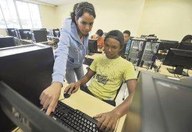
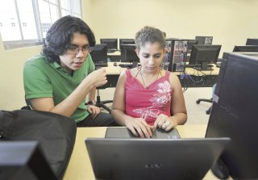
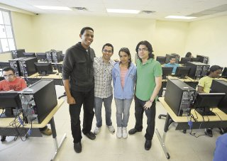

Un grupo de universitarios intenta ayudar a otros a aprender sobre la creación de páginas web y aspira a brindar más talleres de distintos temas de tecnología.

Alexis Hevia, Rogelio Moreno, Ivana Guerrero, Ricardo Bernal y Randolph Patterson son estudiantes de la Universidad Tecnológica de Panamá (UTP), algunos de ingeniería en sistemas computacionales, otros de información y redes, pero todos comparten una vocación: ayudar a otros a aprender.
Hace un año Hevia, junto a otros dos compañeros, formó el grupo Trisfera y empezaron a ofrecer charlas gratuitas en la universidad sobre creación de páginas web. Luego se integraron otros miembros y comenzaron a invitar a expertos a dictar charlas de diversos temas de tecnología. “Hemos dado charlas de creación de juegos y otras aplicaciones, pero todo enfocado en la web”, dice Hevia.
Al darse cuenta de que había un gran interés entre los estudiantes por aprender de estos temas, pero que a muchos les chocaba el horario de clases con las charlas, los chicos de Trisfera decidieron colgar talleres en línea.
Así nació el “Campamento de Verano Trisfera”, una serie de talleres semipresenciales que se está realizando actualmente y donde participan unas 60 personas, entre adolescentes y adultos.
“Cualquiera puede tomar los talleres desde su casa, y hasta el 14 de marzo nos reuniremos para resolver dudas los martes y jueves de 1:00 p.m. a 3:00 p.m. en el edificio 3 de la UTP. Los talleres seguirán disponibles online después de esa fecha”, indica Hevia.
Estos talleres son gratuitos, se usa software libre y no se requiere tener conocimientos previos de creación de páginas web. Incluyen varios temas, que van desde la planificación de una página web y el diseño gráfico hasta los lenguajes de programación HTML, CSS, y para hacer la página más dinámica: php, MySQL y Javascript. El último taller es para aprender a trabajar en equipo y se emplea la herramienta Git.
La mayoría de los participantes se inclina por hacer páginas de entretenimiento, de series, novelas, música y juegos, aunque algunos se orientan a un producto o servicio.
Ivana Guerrero opina que esta es una manera dinámica de aprender. “Nosotros también aprendemos de los que participan”.
Los muchachos de Trisfera plantean que es difícil para las universidades mantenerse al paso de la tecnología. Las tendencias van y vienen rápido, y aunque esto puede ser una ventaja para los más jóvenes, que adoptan las tecnologías con facilidad, no hay un lugar formal donde aprender lo más reciente y, si acaso hay cursos, estos pueden ser costosos para muchas personas.
“Es importante que todos tengan acceso a una educación de calidad y, así como nosotros ponemos nuestro tiempo y esfuerzo, creemos que los que aprenden con los talleres deben tratar de ayudar a otros; hay que tomar conciencia para compartir el conocimiento”, expresa Rogelio Moreno.
Los estudiantes empiezan a ver con luces largas su proyecto. “Estamos evaluando opciones para convertir a Trisfera en algo más que un grupo de universitarios, y empezamos a contactar a organizaciones para ver si obtenemos apoyo para seguir dando estos talleres gratis”, dice Hevia, quien no descarta que en el futuro quizás puedan ofrecer talleres de creación de aplicaciones para teléfonos móviles.
“Cualquier tema se puede hacer con esta metodología, nos gustaría contar con el apoyo de expertos en otras áreas para hacer más talleres, no solo de tecnología”.
Para más información, puede visitar el sitio: www.trisfera.com/camp
 
--- Artículo original escrito por Tamara del Moral en el diario La Prensa. Fotos de Ana Rentería